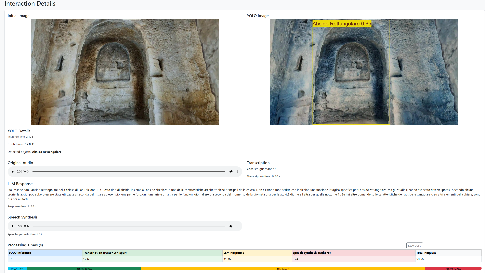
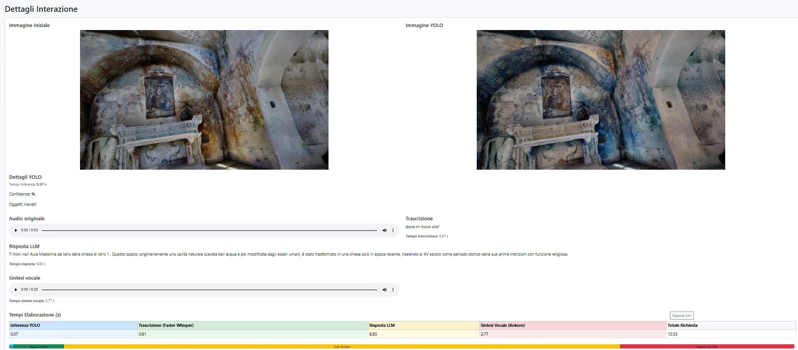

Design and Evaluation of an LLM-Powered Virtual Guide for Rupestrian Churches Using XR Technologies
LLM-powered virtual guide for rupestrian churches in Matera. The system integrates speech transcription, visual object detection,
spatial contextualization, and retrieval-augmented generation (RAG) to deliver context-aware responses grounded in curated cultural
heritage knowledge. The platform is used as a controlled experimental testbed to evaluate the causal impact of retrieval augmentation
on grounding fidelity, robustness, and response stability using a paired RAG ON/OFF design across large-scale LLMs (70B–120B parameters).
XR Application Videos
Demonstration of user interaction and real-time contextual responses within the rupestrian environment of San Falcione.
Demonstration of user interaction and real-time contextual responses within the rupestrian environment of Santa Maria de Idris.
Demonstration of user interaction and real-time contextual responses within the rupestrian environment of Santa Barbara.
Interaction Dashboards
This section showcases the complete multimodal processing pipeline for a single user query across three rupestrian churches:
San Falcione, Santa Maria de Idris, and Santa Barbara.

Backend interaction dashboard of San Falcione.

Backend interaction dashboard of Santa Maria de Idris.Backend interaction dashboard of Santa Barbara.